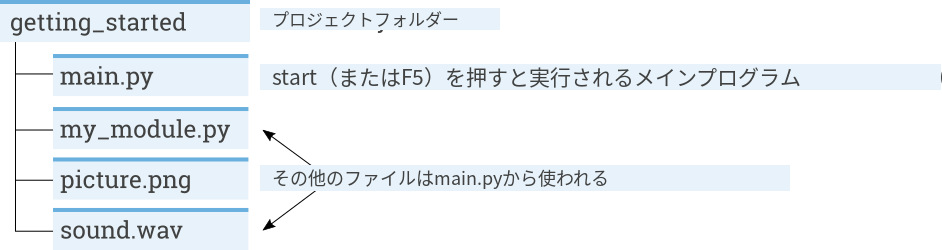
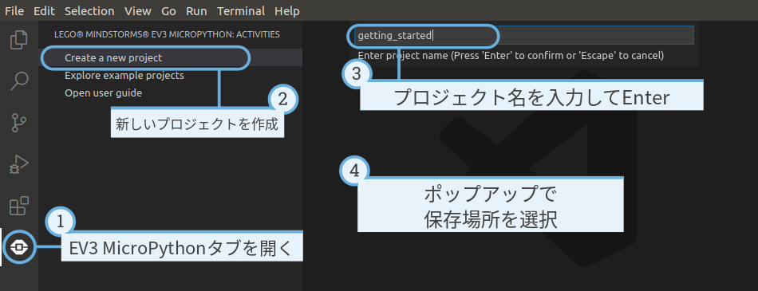
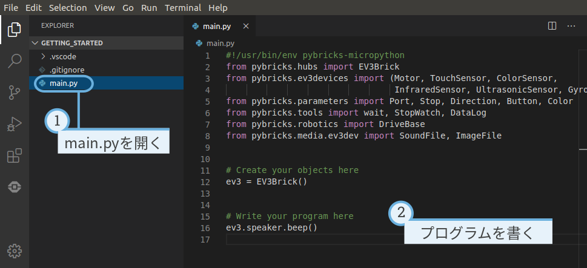
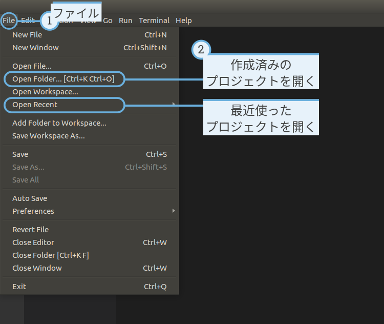
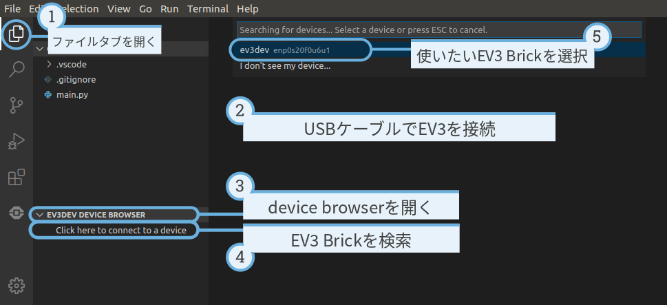
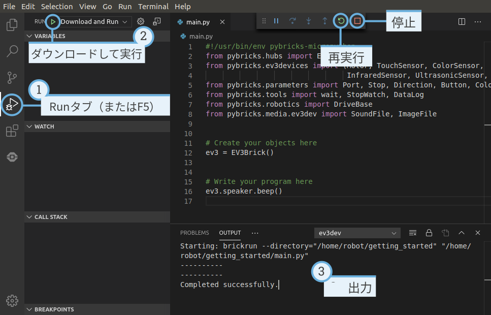
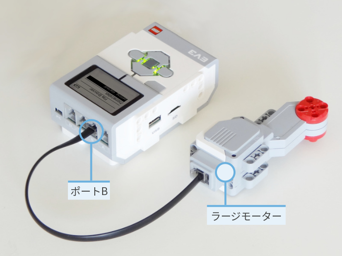

プログラムの作成と実行¶
コンピューターとEV3 Brickのセットアップが完了したので、プログラムを 書き始められます。
プログラムを作成・管理しやすくするために、まずEV3ロボット用の MicroPythonプロジェクトとプログラムの構成を簡単に見てみましょう。
プログラムは プロジェクトフォルダー にまとめられます ( 図 8 )。プロジェクトフォルダーとは、 メインプログラム( main.py )と任意のスクリプトやファイルを含む、 コンピューター上のディレクトリです。このプロジェクトフォルダーは 中身ごとEV3 Brickにコピーされ、メインプログラムが実行されます。
このページでは、そのようなプロジェクトを作成してEV3 Brickに転送する 方法を説明します。

図 8 プロジェクトには main.py というプログラムと、 サウンドやMicroPythonモジュールなどの任意のリソースが含まれます。
新しいプロジェクトを作成する¶
新しいプロジェクトを作成するには、 図 9 のように EV3 MicroPythonタブを開き、 create a new project をクリックします。 表示されたテキストフィールドにプロジェクト名を入力し、 Enter を 押します。 確認を求められたら、このプログラムの保存場所を選び、 choose folder をクリックして確定します。

図 9 新しいプロジェクトを作成する。この例では getting_started という 名前ですが、任意の名前を付けられます。
新しいプロジェクトを作成すると、 main.py というファイルが最初から 含まれています。内容を確認したり編集したりするには、 図 10 のようにファイルブラウザーから開きます。 ここにプログラムを書いていきます。
MicroPythonプログラミングが初めての場合は、既存のコードを残したまま、 そこに自分のコードを追加していくことをおすすめします。

図 10 デフォルトの main.py プログラムを開く。
既存のプロジェクトを開く¶
以前作成したプロジェクトを開くには、 図 11 のように File をクリックし、 Open Folder をクリックします。次に、以前作成した プロジェクトフォルダーに移動して OK をクリックします。 Open Recent メニューから最近使ったプロジェクトを開くこともできます。

図 11 以前作成したプロジェクトを開く。
Visual Studio CodeでEV3 Brickに接続する¶
コードをEV3 Brickに転送するには、まずmini-USBケーブルでEV3 Brickを コンピューターに接続し、Visual Studio Codeで接続を設定する必要が あります。手順は次のとおりです。
- EV3 Brickの電源を入れます
- mini-USBケーブルでEV3 Brickをコンピューターに接続します
- 図 12 のようにUSB接続を設定します。

図 12 コンピューターとEV3 Brick間のUSB接続を設定する
プログラムをダウンロードして実行する¶
F5キーを押してプログラムを実行できます。または、 debug タブを開いて 緑色の開始矢印をクリックして手動で起動できます( 図 13 )。
プログラムが開始すると、ポップアップツールバーが表示され、必要に応じて プログラムを停止できます。EV3 Brickの戻るボタンでもいつでも プログラムを停止できます。
プログラムが print コマンドで何か出力を生成した場合、それは
出力ウィンドウに表示されます。

図 13 プログラムを実行する
サンプルプログラムを拡張する¶
基本的なコードテンプレートを実行できたので、プログラムを拡張して モーターを動かしてみましょう。まず、 図 14 の ように、EV3 BrickのポートBにLarge Motorを接続します。

図 14 ポートBにLarge Motorを接続したEV3 Brick。
次に、 main.py を次のように編集します:
#!/usr/bin/env pybricks-micropython
from pybricks.hubs import EV3Brick
from pybricks.ev3devices import Motor
from pybricks.parameters import Port
# ここにオブジェクトを作成します
# EV3 Brickを初期化します。
ev3 = EV3Brick()
# ポートBのモーターを初期化します。
test_motor = Motor(Port.B)
# ここにプログラムを書きます
# 音を鳴らします。
ev3.speaker.beep()
# モーターを毎秒500度の速さで、目標角度90度まで回転させます。
test_motor.run_target(500, 90)
# もう一度ビープ音を鳴らします。
ev3.speaker.beep(frequency=1000, duration=500)
このプログラムはロボットをビープさせ、モーターを回転させ、もう一度 高音でビープさせます。プログラムを実行して、期待どおりに動作することを 確認してください。